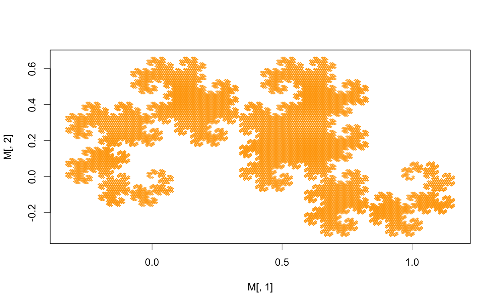
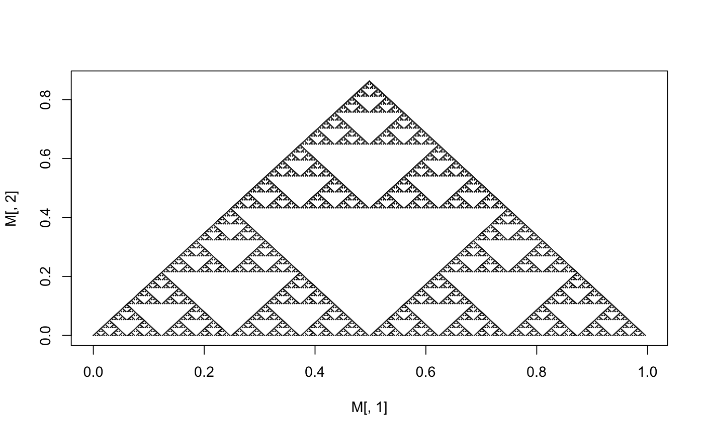
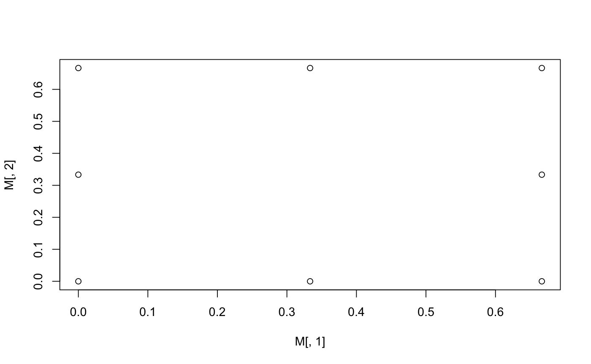
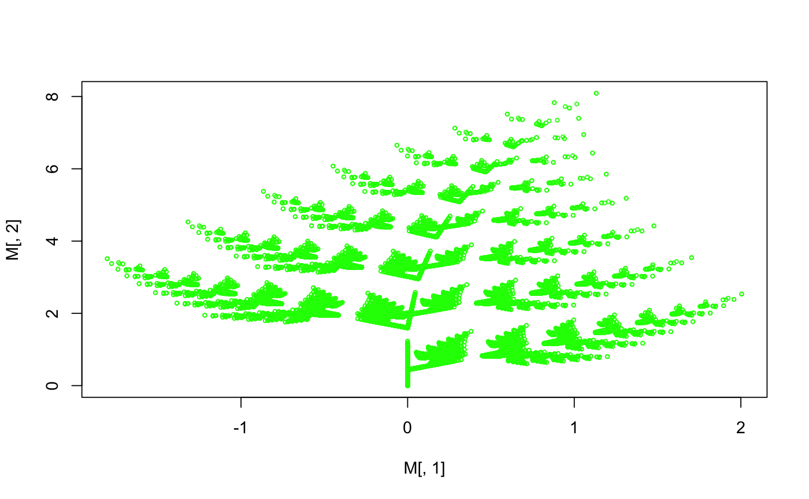

Draws a plot for an object of class IFS with adjustable parameters of depth and starting point for IFS iterations.
# S3 method for IFS plot(x = NULL, start = c(0, 0), depth = 1, ...)
| x | A list of class IFS. |
|---|---|
| start | Coordinates of the starting point for the IFS method. |
| depth | Parameter indicating number of iterations to be executed. |
| ... | Additional parameters of the generic plot function. |
Plotted fractal image.
lin <- function(a,b,c,d,e,f){function(x,y) {c(a*x+b*y+c,d*x+e*y+f)}} plot(createIFS(lin(.5,-.5,0,.5,.5,0),lin(-.5,-.5,1,.5,-.5,0)),depth=16,type="p",cex=.1,col="orange")f <- lin(1/2,0,0,0,1/2,0); g <- lin(1/2,0,1/2,0,1/2,0); h <- lin(1/2,0,1/4,0,1/2,sqrt(3)/4) plot(createIFS(f,g,h),depth=8,cex=.1)lin3 <- function(a,b) {lin(1/3,0,a/3,0,1/3,b/3)} plot(createIFS(lin3(0,0),lin3(0,1),lin3(0,2),lin3(1,0),lin3(1,2),lin3(2,0),lin3(2,1),lin3(2,2)))plot(createIFS(lin(0,0,0,0,0.16,0),lin(0.85,0.04,0,-0.04,0.85,1.6),lin(0.2,-0.26,0,0.23,0.22,1.6), lin(-0.15,0.28,0,0.26,0.24,0.44)),depth=9,type="p",cex=.5,col="green")